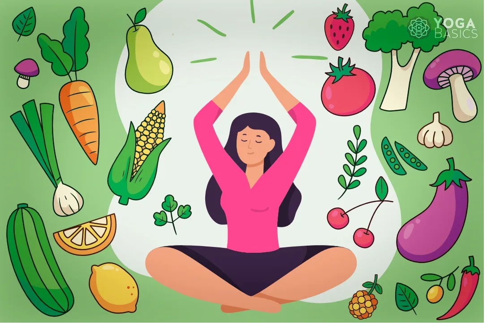

Yoga is essentially a spiritual discipline based on an extremely subtle science, which focuses on bringing harmony between mind and body. It is an art and scince of healthy living. The word ‘Yoga’ is derived from the Sanskrit root ‘Yuj’, meaning ‘to join’ or ‘to yoke’ or ‘to unite’. As per Yogic scriptures the practice of Yoga leads to the union of individual consciousness with that of the Universal Consciousness, indicating a perfect harmony between the mind and body, Man & Nature. According to modern scientists, everything in the universe is just a manifestation of the same quantum firmament. One who experiences this oneness of existence is said to be in yoga, and is termed as a yogi, having attained to a state of freedom referred to as mukti, nirvana or moksha. Thus the aim of Yoga is Self-realization, to overcome all kinds of sufferings leading to 'the state of liberation' (Moksha) or ‘freedom’ (Kaivalya). Living with freedom in all walks of life, health and harmony shall be the main objectives of Yoga practice."Yoga” also refers to an inner science comprising of a variety of methods through which human beings can realize this union and achieve mastery over their destiny.Yoga, being widely considered as an ‘immortal cultural outcome’ of Indus Saraswati Valley civilization – dating back to 2700 B.C., has proved itself catering to both material and spiritual upliftment of humanity.Basic humane values are the very identity of Yoga Sadhana.
The yogic diet stresses the consumption of natural, unprocessed foods that promote spiritual, mental, and physical health and aligns with yogic philosophy. It’s based primarily on the yogic principles of ahimsa, sattva, and saucha.
Ahimsa is commonly translated to non-violence. Ahimsa is the idea that all living things are connected and that the world would be a better place if you do not harm living things. The most obvious way to not cause harm is to reduce or eliminate the consumption of meat and dairy products.
Sattva is a state of equanimity that yogic practices aim to cultivate. A diet that is abundant in sattvic foods will promote a calm heart and a clear mind. Sattvic foods are generally fresh vegetables, whole grains and beans, mild healing spices, and other mildly sweet fruits and vegetables.
Saucha is the practice of purity and cleanliness. One of the simplest ways to promote saucha is to remove or reduce impurities in your body by only eating organic foods, which are free of chemicals.
Combining a healthy diet with regular exercise is the best way of maintaining a healthy weight. Having a healthy weight reduces your chances of developing high blood pressure. Regular exercise will make your heart and blood circulatory system more efficient, lower your cholesterol level, and also keep your blood pressure at a healthy level.
Exercising regularly reduces your risk of having a heart attack. The heart is a muscle and, like any other muscle, benefits from exercise. A strong heart can pump more blood around your body with less effort. Any aerobic exercise, such as walking, swimming and dancing, makes your heart work harder and keeps it healthy.
Yoga for Obesity in Elders Yoga practice heals and cures multiple ills. Therefore, yoga is recommended for weight loss too. According to research published on the NCBI’s website (National Center for Biotechnology Information), yoga practice can also psychologically help in obesity. Yoga improves a person’s muscles and metabolic functioning, which can lead to weight loss.